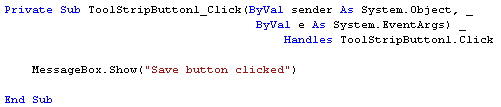

Adding a Toolbar to a Form
The toolbar is a very popular and much-used addition to a programme. It's difficult to think of a piece of software that doesn't make use of them. VB.NET lets you add toolbars to your forms, and the process is quite straightforward. Let's see how it's done:
Either start a new Windows project, or keep the one you currently have. To add a toolbar to the top of your form, expand the Toolbox and locate the ToolStrip control:

Double click the ToolStrip control, and it will be added to the top of your form:
You should also notice the ToolStrip object that appears at the bottom of the window:
ToolStrips work by adding buttons and images to them. The button is then clicked, and an action performed.
Click on your ToolStrip to select it. In the property box for the ToolStrip,
you'll notice that it has the default Name of ToolStrip1. We'll keep
this Name. But locate the Items (Collection) property:
Click the button with the three dots in it. This brings up the Items Collection Editor:
To add a new button to your ToolStrip, click the Add button at the top. The button appears in the Members box (ToolStripButton1):
Notice that the new button has its own list of properties, just to the right. To add an image to this new button, locate the Image property:
Click the small button with the 3 dots in it to bring up the Select Resource box:
In the image above, we've selected "Project resource file", and then clicked the Import button. We then navigated to some Bitmap images and imported the five that you can see in the screenshot above. (The Bitmap folder is amongst the files you download at the start of this book.) Click OK when you have imported some images. You will be returned to the Item Collection Editor. Click OK on this, as well. The ToolStrip on your form will then look like this:
The second of those images is a dropdown list of available ToolStrip options:

So if you want, say, a separator instead of a button, select it from the list. This dropdown list will disappear when you run the form:
Repeat the steps outlined above, and add some more buttons to your ToolStrip. It should then look something like ours:
Of course, if you click on the buttons nothing will happen. We need to write the code that gets them to work.
Coding For your Toolbar buttons
Double click your first ToolStripbutton to bring up the coding window. It should look like this:
You can place any code you like, here. Try a message box, as in the image below:

Run your programme and click your ToolStrip button. You should see the message box display. In a real programme, however, the code would be the same code for a menu item - it's just shortcut, after all!
In the next part, you'll learn how to create multiple forms in a VB NET project.